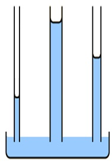

Press Ctrl-Z to toggle the answers & Ctrl-x to toggle the solutions.
Test
Jul 10, 2023
name: ______________________________________
1) What is the main reason why the boiling point of NH3 is much higher than that of PH3?
A) NH3 can hydrogen bond whereas PH3 cannot*
B) NH3 has dipole-dipole forces whereas PH3 does not
C) PH3 can hydrogen bond whereas NH3 cannot
D) NH3 has stronger London dispersion forces than PH3
NH3 has a hydrogen attached to a N, O, or F, so it can hydrogen bond whereas PH3 does not, so it cannot hydrogen bone. Hydrogen bonding gives NH3 a higher boiling point.
2) Choose the substance with the highest ΔHvap.
A) NH3
B) OF2
C) CH4
D) KF*
KF is an ionic compound. Ionic bonds are stronger than intermolecular bonds, so it will have the highest ΔHvap.
NH3 can hydrogen bond, thus would have the second highest ΔHvap.
OF2 is polar (dipole-dipole forces), thus would have the third highest ΔHvap.
CH4 is non-polar (only London dispersion forces), thus would have the lowest ΔHvap.
3) Place the following substances in order of increasing boiling point.
H2O N2 CO
A) CO < N2 < H2O
B) CO < H2O < N2
C) N2 < CO < H2O*
D) H2O < CO < N2
N2 only has London dispersion forces, so it has the lowest boiling point.
CO is polar, so it has dipole-dipole forces
H2O can hydrogen bond, so it will have the highest boiling point.
4) In which of the following figures is the adhesive force less than the cohesive force?

A) The image labeled A
B) The image labeled B*
C) The image labeled C
D) None of the above.
When adhesive force is equal to the cohesive force the fluid will have the same attraction to the side of the tube as it does other molecules in the fluid, so it will cause the meniscus to be flat, thus image A is the answer.
5) How much energy is required to heat 38.0 g H2O from a liquid at 65.0°C to a gas at 120°C?
ΔHvap = 40.7 kJ/mol
Cliquid = 4.184 \( \frac{J}{g°C} \)
Cgas = 2.01 \( \frac{J}{g°C} \)
Csolid = 2.09 \( \frac{J}{g°C} \)
Tmelting = 0°C
Tboiling = 100°C
A) 105 kJ
B) 7180 kJ
C) 1550 kJ
D) 92.9 kJ*
To calculate the energy required to heat water from a liquid at 65.0°C to a gas at 120°C, we need to consider the following steps:
- Heating the liquid water from its initial temperature to its boiling point.
- Vaporizing the liquid water at its boiling point to gas.
- Heating the water vapor from it's boiling point to 120°C.
Step 1: Heating the liquid water First, we calculate the energy required to heat the liquid water from 65.0°C to its boiling point at 100°C.
q1 = m x Cliquid x ΔT1
where: q1 = energy required (in joules) m = mass of water (in grams)
Cliquid = specific heat capacity of liquid water (in J/g-°C)
ΔT1 = change in temperature (final temperature - initial temperature)
Cgas = specific heat capacity of liquid water (in J/g-°C)
Given: m = 38.0 g
Cliquid = 4.184 J/g-°C
ΔT1 = 100°C - 65.0°C = 35.0°C
q1 = (38.0 g) x (4.184 J/g-°C) x (35.0°C)
q1 ≈ 5560 J x \( \frac{1 kJ}{1000 J} \) = 5.56 kJ
Step 2: Vaporizing the liquid water Next, we calculate the energy required to vaporize the liquid water at its boiling point.
q2 = n x ΔHvap
where: q2 = energy required (in joules)
n = number of moles of water
ΔHvap = enthalpy of vaporization (in J/mol)
To calculate the number of moles of water, we use the molar mass of water (H2O), which is approximately 18.02 g/mol.
mol = 38.0 x \( \frac{1 mol H_2O}{18.02 g H_2O} \) ≈ 2.11 mol
Given: ΔHvap = 40.7 kJ/mol
q2 = (2.11 mol) * (40.7 kJ/mol) ≈ 85.8 kJ
Step 3: Heating the water vapor, we calculate the energy required to heat the water vapor from 100°C to 120°C.
q3 = m x Cliquid x ΔT2
where: q3 = energy required (in J) m = mass of water (in grams)
Cgas = specific heat capacity of liquid water (in J/g-°C)
ΔT1 = change in temperature (final temperature - initial temperature)
Given: m = 38.0 g
Cliquid = 2.01 J/g-°C
ΔT1 = 120°C - 100°C = 20.0°C
q3 = (38.0 g) x (2.01 J/g-°C) x (20.0°C)
q3 ≈ 1530 J x \( \frac{1 kJ}{1000 J} \) = 1.53 kJ
Total energy required: The total energy required is the sum of q1, q2 and q3.
Total energy = q1 + q2 + q3 ≈ 5.56 kJ + 85.8 kJ + 1.53 kJ
Total energy ≈ 92.9 kJ
6) Using the phase diagram of water below, what phase transition would occur if the pressure was increased from 0.005 atm to 58 atm at 51°C?

A) Condensation*
B) Deposition
C) Freezing
D) Sublimation
At 0.005 atm and 51°C the water would be a gas, but at 58 atm and 51°C it would be a liquid. So the phase transition is condensation
7) How much energy is required to vaporize 58.6 g of benzene (C6H6) (78.11 g/mol) at its boiling point, if its ΔHvap is 30.72 kJ/mol?
A) 149 kJ
B) 58.6 g x 1 mol/30.72g x kJ
C) 23.0 kJ*
D) 0.750 kJ
58.6 g x 1mol/78.11g x 30.72 kJ/mol = 23.0 kJ
8) Which of the following statements is TRUE?
A) Particles move to a lower potential energy when they form bonds*
B) Increasing the temperature of a liquid generally causes it to become a solid
C) Breaking bonds releases energy
D) Hydrogen bonding is generally stronger than covalent bonds
It is true that particles move to a lower potential energy when they form bonds.
Ionic and covalent bonds are stronger than intermolecular forces.
Energy is required to break bonds, energy is not released when bonds are broken.
Generally speaking, increasing pressure will cause a chemical to go from gas to liquid to solid (the exception being chemicals where the solid has a lower density than the liquid). Increasing temperature will cause a chemical to go from gas to liquid to solid.
9) Determine the normal boiling point (at 760 mm Hg) of a substance whose vapor pressure is 56.7 mm Hg at 30.0°C and has a ΔHvap of 24.6 kJ/mol.
A) 239 K
B) 30.8 K
C) 413 K*
D) 304 K
To determine the normal boiling point of a substance, we need to find the temperature at which its vapor pressure is equal to the atmospheric pressure at 760 mm Hg.
Given:
T1: 30.0°C
T2: ?
P1: 56.7 mm Hg
P2 = 760 mm Hg (normal pressure)
ΔHvap = 24.6 kJ/mol
R = gas constant (8.3145 J/mol·K)
To calculate the normal boiling point, we can use the Clausius-Clapeyron equation:
ln(P2/P1) = -(ΔHvap/R) * (1/T2 - 1/T1)
Converting the given values to K and J:
T1: 30.0°C + 273.15 = 303 K
ΔHvap = 24.6 kJ/mol = 24.6 × 1000J/1 kJ = 2.46x104 J/mol
ln(P2/P1) = -(ΔHvap/R) * (1/T2 - 1/T1)
ln(760 mm Hg/ 56.7 mm Hg) = -(2.46x104 J/mol / 8.3145 J/mol·K) * (1/T2 - 1/303 K)
Simplifying: ln(13.4) = -2960 K * (1/T2 - 1/303 K)
Now, let's solve for T2:
-0.000877 K = (1/T2 - 1/303 K)
-0.000877 1/K = 1/T2 - 1/303 K
-0.000877 1/K + 1/303 1/K = 1/T2
0.00242 1/K = 1/T2
Taking the inverse of both sides:
413 K = T2
10) Identify the place which has the lowest boiling point of water.
A) Mt. Everest, 29,035 feet*
B) Death Valley, 282 feet below sea level
C) Denver, Colorado, 5280 feet
D) New Orleans, sea level
The lowest boiling point will be where the atmospheric pressure is the lowest. Atmospheric pressure will be the lowest at the highest elevation.
11) Which of the following has the lowest viscosity?
A) IF5
B) CH3CH2CH2OH
C) Br2*
D) H2O
Br2 has the lowest viscosity, because it has the lowest intermolecular forces (only London dispersion forces).
H2O and CH3CH2CH2OH can hydrogen bond.
IF5 has dipole-dipole forces because it is an asymmetrical shape (square pyramidal).
12) If three capillary tubes are dipped into water, which of the following images would most accurately represent the relative heights of the water level in the three capillary tubes?
A) 
B)

C)
 *
*D)

shows the thinnest tube with the highest height of liquid, and the widest tube with the lowest height of liquid, so it is the correct answer.
13) Choose the substance with the lowest vapor pressure at a given temperature.
A) SiS2
B) O2
C) H2O*
D) H2S
The chemical with the highest intermolecular forces will have the lowest vapor pressure. Since H2O can hydrogen bond, it will have the highest intermolecular forces, and the lowest vapor pressure.
H2S is a polar molecule (dipole-dipole forces).
SiS2 and O2 are nonpolar (only have London dispersion forces).
14) Which of the following would you expect to have the lowest surface tension?
A) CH3CH2CH2CH2CH2CH2CH3
B) CH3CH2CH2CH2CH2CH2CH2CH3
C) CH3CH2CH2CH2CH2CH3
D) CH3CH2CH2CH2CH3*
The shortest carbon chain will have the smallest London dispersion forces, thus the lowest surface tension.
15) Which of the following increases the rate of vaporization?
A) Decreasing temperature
B) Strong intermolecular bonds
C) Increasing the surface area*
D) Decreasing the surface area
Increasing the surface area, weak intermolecular bonds, or increasing the temperature will lead to an increased rate of vaporization.
16) Which of the following 3 alkane isomers would you expect to have the
lowest boiling point?

A) Pentane
B) Isopentane
C) Since they are isomers, they will have the same boiling point.
D) Neopentane*
Neopentane is the most branched alkane, so it will have the least surface area interacting for London dispersion forces. Thus it will have the lowest intermolecular forces and the lowest boiling point.
17) Which substance has the highest intermolecular forces?
A) CH3CH2CH3
B) CH4
C) CH3CH3
D) CH3CH2CH2CH3*
CH3CH2CH2CH3 has the highest intermolecular forces because it is the longest hydrocarbon (with the highest London dispersion forces).
18) What is the strongest type of intermolecular force present in a solution of NaCl & water?
A) Dipole-dipole forces
B) Hydrogen bonding
C) London dispersion forces
D) Ion-dipole forces*
E) None of the above.
The strongest type of intermolecular force present in a solution of NaCl & water is ion-dipole forces, because a solution of NaCl & water is a mixture of an ionic compound and a polar compound.
19) (SLO 1.5) List the compounds below in decreasing boiling point order.
CH3CH2CH2CH3 He CH3CH2CH2OH
A) CH3CH2CH2CH3 > He > CH3CH2CH2OH
B) CH3CH2CH2CH3 > CH3CH2CH2OH > He
C) He > CH3CH2CH2OH > CH3CH2CH2CH3
D) CH3CH2CH2OH > CH3CH2CH2CH3 > He*
CH3CH2CH2OH can hydrogen bond, so it will have the boiling point.
CH3CH2CH2CH3 is a large nonpolar molecule, so it will have high London dispersion forces.
He is small and nonpolar, so it will have a low amount of London dispersion forces, and have the lowest boiling point.
20) (SLO 1.2) In liquid butanol CH3CH2CH2CH2OH, which intermolecular forces are present?
A) Only hydrogen bonding forces are present
B) Only dipole-dipole and ion-dipole forces are present
C) Dispersion, hydrogen bonding, and dipole-dipole forces are present*
D) Only dispersion and dipole-dipole forces are present
butanol CH3CH2CH2CH2OH can hydrogen bond, is polar (thus dipole-dipole forces), and will have London dispersion forces.
21) A sealed container contains 0.208 L of water with an atmosphere of oxygen gas. What is the concentration of O2 in the water if the external pressure is 5.76 atm given that kH for O2 is 1.66 × 10-6 M/mm Hg at this temperature?
A) 0.00727 M*
B) 4570 M
C) 1.26x10-8 M
D) 9.56x10-6 M
Step 1: Convert the external pressure from atm to mm Hg: 5.76 atm x 760 mmHg / 1atm ≈ 4380 mm Hg
Step 2: Calculate the concentration of O2 in water using Henry's law:
Concentration of O2 = kH * Partial pressure of O2
Partial pressure of O2 = External pressure
Concentration of O2 = 1.66 × 10-6 M/mm Hg x 4380 mm Hg mm Hg
Concentration of O2 ≈ 0.00727 M
22) Determine the vapor pressure of a solution at 25°C that contains 60.0 g of glucose (C6H12O6) (180.2 g/mol) in 400 mL of water (18.02 g/mol). The vapor pressure of pure water at 25°C is 23.8 torr, and the density of water is 1.00 g/mL.
A) 1590 torr
B) 23.4 torr*
C) 0.352 torr
D) 0.357 torr
60.0 g of glucose (C6H12O6) x (1 mol glucose / 180.2 g glucose) = 0.333 mol glucose
400 mL water x (1.00 g water/ 1 mL water) x (1 mol water / 18.02 g water) = 22.2 mol water
Total moles solution = 0.333 mol glucose + 22.2 mol water = 22.5 mol
Xwater = 22.2 mol water / 22.5 mol = 0.985
Psolution = Xwater x Ppure water = 0.985 x 23.8 torr = 23.4 torr
23) Which of the following have a great impact on the solubility of a gas in a liquid?
A) Atmospheric pressure only
B) Temperature only
C) Temperature and partial pressure of the gas*
D) None of the above.
Only temperature has any significant impact on the solubility of a solid (increasing the temperature increases the solid's solubility).
Both temperature and partial pressure of the gas would have a significant impact on the solubility of a gas (increasing the temperature decreases the solubility of a gas, and increasing the partial pressure of the gas increases the solubility of a gas).
24) A 3.53 L sample of an aqueous solution contains 0.111 g of sodium ions. Determine the concentration of sodium ions in ppm if the density of the solution is 1.07 g/mL.
A) 29.4 ppm*
B) 2.94x104 ppm
C) 0.0000294 ppm
D) 32.7 ppm
3.53 L solution x (1000 mL / 1 L) x (1.07 g / 1 mL) = 3780 g solution
3780 g solution - 0.111 g of sodium ions = 3780 g water
PPM = mass of sodium ions/mass of solution x 106 = 0.111 g of sodium ions / 3780 g solution x 106 = 29.4 ppm
25) What is the mol fraction of ethanol, C2H5OH (46.07 g/mol), in a solution of 70.2 g of ethanol and 500 g of water (18.02 g/mol)?
A) 18.2
B) 0.0549
C) 0.0521*
D) 0.948
70.2 g ethanol x (1 mol ethanol / 46.07 g ethanol) = 1.52 mol ethanol
500 g water x (1 mol water / 18.02 g water) = 27.8 mol water
Total moles solution = 1.52 mol ethanol + 27.8 mol water = 29.3 mol
mole fraction of ethanol = 1.52 mol ethanol / 29.3 mol = 0.0521
26) Which of the following describes how you would prepare a 2.0 M (molarity) solution of NaNO3?
A) Measure out 1.0 moles of NaNO3 then put it in a volumetric flask and add enough water to produce 2 L of solution.
B) Measure out 2.0 moles of NaNO3 then add 1 Kg of water.
C) Measure out 2.0 moles of NaNO3 then put it in a volumetric flask and add enough water to produce 1 L of solution.*
D) Measure out 2.0 moles of NaNO3 then put it in a flask and 1 L of water.
Measure out 2.0 moles of NaNO3 then put it in a volumetric flask and add enough water to produce 1 L of solution.
It is important to remember that molarity is moles of solute over liters of solution.
27) What is the major intermolecular force between CH3OH and H2O?
A) Hydrogen bonding*
B) London dispersion forces
C) Ion-dipole forces
D) Dipole-dipole forces
28) How many moles of HCl are contained in 373 g of water in a 0.225 m HCl solution?
A) 0.0839 mol*
B) 3.06 mol
C) 83.9 mol
D) 0.874 mol
373 g water x (1 Kg / 1000 g)= 0.373 Kg
0.373 Kg of water X (0.225 mol HCl / 1 Kg water) = 0.0839 mol
29) Calculate the mass of oxygen (in mg) dissolved in a 2.00 L bucket of water exposed to a pressure of 1.04 atm of air. Assume the mole fraction of O2 in air to be 0.21 given that kH for O2 is 1.3 × 10-3 M/atm at this temperature.
A) 18.2 mg*
B) 86.5 mg
C) 9.09 mg
D) 0.0182 mg
PO2 = XO2 x Pair
PO2 = 0.21 x 1.04 atm
S (M) = KH * PO2 = 1.3 × 10-3 M/atm x 0.218 atm = 0.000284 M
0.000284 M x 2.00 L = 0.000568 mol x (32.00 g O2 / 1 mol O2) x (1000 mL / 1L) = 18.2 mg
30) Which of the following compounds will be most soluble in water (H2O)?
A) Ammonia (NH3)*
B) Acetylene (C2H2)
C) Methane (CH4)
D) Ethane (C2H6)
E) None of the above.
The compounds will be most soluble in water (H2O) will be a compound that can also hydrogen bond. Of the choices, only Ammonia (NH3) can hydrogen bond, so Ammonia (NH3) is the answer.
31) Which of the following would result in an endothermic reaction?
A) The reactants have weaker bonds than the products
B) The products and reactants have equal strength bonds
C) The reactants are at a higher potential energy than the products
D) The reactants have stronger bonds than the products*
Exothermic:
Products have stronger bonds/reactants have weaker bonds
The product is at a lower potential energy
Endothermic:
Products have weaker bonds/reactants have stronger bonds
The product is at a higher potential energy
32) Determine the Henry's law constant for an unknown gas in water at 25°C if the unknown gas at a pressure of 0.0131 atm produces a solution with a concentration of 2.88 M.
A) 0.0377 M/atm
B) 0.943 M/atm
C) 220. M/atm*
D) 0.00455 M/atm
S = Kh * p
Kh = S/p
Kh = 2.88 m/0.0131 atm = 220. M/atm
33) What mass (in g) of NH3 (17.03 g/mol) must be dissolved in 475 g of methanol (32.04 g/mol) to make a 0.352 m solution?
A) 5.36 g
B) 0.0890 g
C) 0.167 g
D) 2.85 g*
What mass (in g) of NH3 (17.03 g/mol) must be dissolved in 475 g of methanol (32.04 g/mol) to make a 0.352 m solution?
0.475 Kg solution x (0.352 molsolute / 1 Kg solvent) X (17.03 g solute / 1 mol solute) = 2.85 g
34) The enthalpy of solution for a compound is -58 kJ/mol, and the enthalpy of hydration for the compound's ion X- is -390 kJ/mol. Calculate the lattice energy (in kJ/mol) of the compound.
A) -332 kJ/mol
B) 448 kJ/mol
C) 332 kJ/mol*
D) -448 kJ/mol
To solve this problem, we can use the following equation:
ΔHsolution = ΔHlattice + ΔHhydration
Where: ΔHsolution = Enthalpy of solution
ΔHlattice = Lattice energy
ΔHhydration = Enthalpy of hydration
We are given: ΔHsolution = -58 kJ/mol
ΔHhydration = -390 kJ/mol
Rearranging the equation, we can solve for ΔHlattice:
ΔHlattice = ΔHsolution - ΔHhydration
Plugging in the given values:
ΔHlattice = -58 kJ/mol - (-390 kJ/mol) = -58 kJ/mol + 58.0 kJ/mol = 332 kJ/mol
35) What is the parts per million (ppm) of a 0.00400 m (molality) aqueous MgCl2 (molar mass 95.21 g/mol) solution?
0.00400 mol x 95.21 g/mol = 0.381 g MgCl2
A) 4.00 ppm
B) 2630 ppm
C) 381 ppm*
D) 0.000381 ppm
1 kg H2O x 1000 g/1 kg = 1000 g H2O
Total grams of solution = 0.381 g + 1000 g = 1000. g
ppm = (0.381 g MgCl2)/(1000. g solution) x 106 = 381 ppm
36) (SLO 1.6) What is the change in boiling point of a solution of 30.9 g K2SO4 (174.3 g/mol) in 703 g of water? Kb for water is 0.512°C/m. Assume ideal behavior.
A) 0.387°C*
B) 0.000129°C
C) 22.5°C
D) 0.129°C
To calculate the change in boiling point of a solution, we can use the equation:
ΔTb = i x Kb x m
where: i = van't Hoff factor
ΔTb = change in boiling point
Kb = boiling point elevation constant (0.512 °C/m for water)
m = molality of the solution (moles of solute per kilogram of solvent)
First, we need to calculate the molality of the solution, which is the number of moles of solute per kilogram of solvent.
30.9 g K2SO4 x (1 mol K2SO4)/(174.3 g K2SO4) = 0.177 mol K2SO4
Step 2: Calculate the molality of the solution: Molality = moles of solute / mass of solvent (in kg) Mass of solvent (water) = 703 g x 1 kg/1000 g = 0.703 kg
Molality =0.177 mol K2SO4 mol / 0.703 kg ≈ 0.252 M
Step 3: van't Hoff factor
The van't Hoff factor for K2SO4 will be estimated at 3 because K2SO4 contains 3 ions.
Step 3: Calculate the change in boiling point: ΔTb = i x Kb x m ΔTb = 3 x 0.512 °C/m * 0.252 M ≈ 0.387 M °C
37) (SLO 1.3) The Henry’s law constant for carbon dioxide gas in water at 20ºC is 392 x 10-4 M/atm. When the partial pressure of carbon dioxide above a sample of water is 0.650 atm, the concentration of carbon dioxide in the water is ______ M.
A) 16.6
B) 255
C) 0.0603
D) 0.0255*
Henry's law relates the concentration of a gas in a liquid to its partial pressure above the liquid. The equation for Henry's law is:
C = k * P
where: C is the concentration of the gas in the liquid (in Molarity, M) k is the Henry's law constant for the specific gas-solvent system (in M/atm) P is the partial pressure of the gas above the liquid (in atm)
Given: Henry's law constant (k) for carbon dioxide gas in water = 392 x 10-4 M/atm
Partial pressure of carbon dioxide (P) = 0.650 atm
Using Henry's law, we can calculate the concentration of nitrogen gas in the water (C):
C = (392 x 10-4 M/atm) * (0.650 atm) C ≈ 0.0255 M
38) (SLO 1.7) What is a solution containing less than the maximum equilibrium amount of solute at a given temperature called?
A) A supersaturated solution
B) A saturated solution
C) A concentrated solution
D) An unsaturated solution*
E) None of the above.
An unsaturated solution contains less than the maximum amount of solute at a given temperature
A supersaturated solution contains more than the maximum amount of solute at a given temperature
A saturated solution contains the maximum equilibrium amount of solute at a given temperature
39) (SLO 1.1) The osmotic pressure of a solution formed by dissolving 27.4 mg of Aspirin (C9H8O4) (180.16 g/mol) in enough water to make 0.335 L of solution at 40°C is _____ atm.
A) 0.0117*
B) 0.00391
C) 0.00149
D) 11.7
Given: Mass of Aspirin = 27.4 mg x 1 g/1000 mg= 0.0274 g
Molar mass of Aspirin (C9H8O4) = 180.16 g/mol
Volume of solution (V) = 0.335 L
First, calculate the number of moles of Aspirin:
moles of Aspirin = 0.0236 g x (1mol Aspirin)/(180.16 g Aspirin) ≈ 0.000152 mol
Next, calculate the molarity (M) of the solution:
Molarity (M) = moles of solute / volume of solution Molarity (M) = 0.0000152 mol / 0.335 L
Molarity (M) ≈ 0.000454 M
Now we can calculate the osmotic pressure:
π = MRT
where: M is the molarity of the solution R is the ideal gas constant (0.0821 L·atm/(mol·K)) T is the temperature in Kelvin (K)
Given: Temperature (T) = 40°C +273.15 = 313.15 K
π = (0.000454) * (0.08206 L·atm/(mol·K)) * (313.15 K) π ≈ 0.0117 atm
40) (SLO 1.4) An aqueous solution is 0.720 m (molality) LiF (25.94 g/mol). What is the molarity (M) of the solution if the density of the aqueous solution is 1.27 g/mL?
A) 0.898 M*
B) 0.0465 M
C) 0.707 M
D) 0.914 M
A solution is 0.720 m LiF (25.94 g/mol). What is the molarity (M) of the solution if the density of the solution is 1.27 g/mL?
0.720 mol LiF x (25.94 g LiF)/(1 mol LiF) = 18.7 g LiF
1 kg water x 1000 g/1 kg = 1000 g water
1000 g water + 18.7 g LiF = 1020 g solution
1020 g solution x 1 mL/1.27 g = 802 mL
802 mL x 1 L/1000 mL = 0.802 L
molarity (M) = 0.720 mol LiF/ 0.802 L = 0.898 M
41) What is the order of the reaction represented by the graph below?

A) second*
B) zeroth
C) first
D) third
42) What are biological catalysts called?
A) Enzymes*
B) Inhibitors
C) Substrates
D) Exfoliators
43) Given the following proposed mechanism, what is the rate law for the reaction?
A
2 + B
➞ A2B (overall reaction)
| step 1 |
A2 ➞ 2A |
slow |
| step 2 |
2A + B ➞ A2B |
fast |
A) Rate = \( K[A_2]^{1/2}[B] \)
B) Rate = \( \frac{K[A_2]^2}{2} \)
C) Rate = \( K[A_2] \)*
D) Rate = \( K[A_2][B] \)
44) Which step is always the rate-determining step in a multi-step reaction?
A) The last step
B) The first step
C) The slowest step*
D) The fastest step
45) Using the balanced chemical equation below, calculate the rate of rate reaction with a rate in change of concentration of P equal to -17.7 M/s.
4 P + 5 O2 ➞ 2 P2O5
A) 9.82x104 M/s
B) 17.7 M/s
C) 70.8 M/s
D) 4.42 M/s*
46) The reaction of nitrogen monoxide with oxygen is second-order with respect to nitrogen monoxide, and has a rate constant of 0.207 M-1s-1. If the initial concentration of nitrogen monoxide is 4.20 M, what is the concentration of nitrogen monoxide after 125 s?
A) -21.7 M
B) -0.039 M*
C) 2.43x10-11 M
D) 109 M
47) A reaction is found to have an activation energy of 32.8 kJ/mol, and a frequency factor (A) of 4.46x1010 s-1. What is the rate constant of the reaction at 356 K?
A) 4.41x1010
B) 2.90x1015
C) 6.87x105*
D) 8.58x105
48) What generally happens with a reaction when the temperature is increased?
A) The rate constant (K) decreases, causing the rate of the reaction to decrease.
B) The rate constant (K) decreases, causing the rate of the reaction to increase
C) The rate constant (K) increases, causing the rate of the reaction to decrease
D) The rate constant (K) increases, causing the rate of the reaction to increase*
49) The reaction A + B ➞ C + D, has a rate constant of 8.07 × 10-5 M-2s-1 at 0°C, what is the overall order of the reaction?
A) 2
B) 0
C) 1
D) 3*
50) Which of these two pathways represents the uncatalyzed pathway?

A) A*
B) B
C) All of the above.
D) None of the above.
51) Identify the statement that is true.
A) Catalysts decrease the rate constant
B) Increasing the temperature generally increases the rate constant*
C) The rate constant will always double if you double the temperature
D) A catalyst is an intermediate in a reaction
52) Given the initial rate data below, what is the rate law for the following reaction?
A (g) + B (g)
➞ C (g)
| Trial |
[A] |
[B] |
rate (M/s) |
| 1 |
1.0 |
1.0 |
5.83x10-8 |
| 2 |
1.0 |
2.0 |
2.33x10-7 |
| 3 |
2.0 |
1.0 |
5.83x10-8 |
A) rate = K[B]4
B) rate = K[A][B]
C) rate = K[A]2
D) rate = K[B]2*
53) What is are the units for the k in the following rate law.
Rate = k[A]2[B]
A) 1/(M3s) or M-3s-1
B) M/s or Ms-1
C) 1/(M2S) or M-2S-1*
D) 1/s or s-1
54) What is the overall order of the following reaction?
2 NO (g) + O2 (g) ➞ 2 NO2 (g); Rate = k[NO]2[O2]
A) zeroth
B) second
C) first
D) third*
55) The following reaction is a second order reaction. If the rate constant is 0.526 M
-1s
-1, and the original concentration of O
3 is 1.15x10
-2 M, then what is the half-life?
2 O3 (g) ➞ 2 O2 (g)
A) 165 s*
B) 45.7 s
C) 0.0109 s
D) 1.32 s
56) Which of the following expressions accurately depicts the rate of this reaction?
4 P + 5 O2 ➞ 2 P2O5
A) \( +\frac{1}{2}\frac{Δ[P_2O_5]}{Δt} \)*
B) \( +\frac{1}{5}\frac{Δ[O_2]}{Δt} \)
C) \( -\frac{5}{1}\frac{Δ[P_2]}{Δt} \)
D) \( -\frac{Δ[P_2]}{Δt} \)
Test